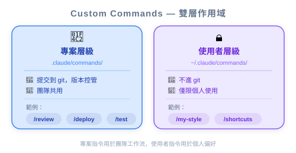
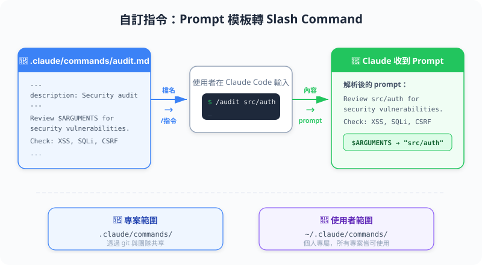
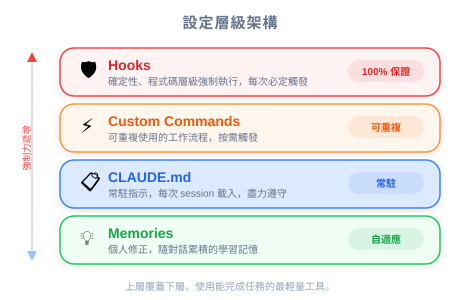

| 項目 | 內容 |
|---|---|
| 考試對應 | D3 — Claude Code Configuration & Workflows（佔 20%） |
| Task Statements | 3.2 ★★★（custom commands & skills）、3.1 ★★（CLAUDE.md config） |
| 課程來源 | claude-code-in-action / 03-context-and-commands / Lesson 11 |
Custom commands 是你的工程團隊可以建立和共享的可重複工作流程模板。不讓每個開發者為常見任務（audit dependencies、寫測試、review code）各寫各的 prompt，團隊在 .claude/commands/ 裡定義一次 command，所有人用同樣的方式使用。PM 應該關注這件事，因為這就是你在團隊中標準化 AI 輔助工作流程的方式 — 減少不一致和新人上手摩擦。
/audit 而不是各自版本的「檢查我的 dependencies」，輸出是可預測的/ 看到所有可用的工作流程，不用讀文件把 custom commands 想成團隊劇本 — 一套共享的標準作業程序。
| 沒有 Commands | 有 Commands |
|---|---|
| 「我們團隊怎麼 audit dependencies？」— 問資深開發者 | 打 /audit — 每個人走同一個流程 |
| 「我們寫測試的慣例是什麼？」— 讀文件 | 打 /write_tests src/auth.ts — 慣例已內建 |
| 每個開發者的輸出略有不同 | 團隊間標準化的輸出 |
| 知識在人的腦子裡 | 知識在 codebase 裡 |
💡 PM 重點
Custom commands 就是把部落知識變成共享基礎設施的方式。如果你聽到「只有 Alice 知道怎麼做 X」，那個工作流程就應該變成一個 command。
.claude/commands/ 資料夾裡建立一個 markdown 檔案audit.md → /audit）$ARGUMENTS 讓使用者在執行 command 時傳入特定細節範例：/write_tests src/auth.ts 告訴 Claude：「按照我們專案的測試 patterns 為 src/auth.ts 寫測試。」
你的團隊兩個月內從 3 人成長到 8 人。你注意到：
- Code review 的評論很重複（「你忘了加測試」、「import pattern 不對」）
- 新工程師要一週才能學會專案慣例
- AI 產出的程式碼品質在開發者之間差異很大
| 問題 | Command 解決方案 | 影響 |
|---|---|---|
| 不一致的測試 patterns | /write_tests $ARGUMENTS — 編碼測試慣例 |
所有 AI 產出的測試走同一個結構 |
| 忘記做 dependency audit | /audit — 跑完整的 audit + fix + test 循環 |
一鍵合規檢查 |
| 品質不一的 code review | /review $ARGUMENTS — 標準化的 review checklist |
一致的 review 輸出 |
| 新人上手慢 | 新開發者打 / 就能看到所有團隊工作流程 |
自助式可發現性 |
🎯 PM 重點
規劃 AI 輔助開發工作流程時，問工程團隊：「哪些重複性任務應該變成 custom commands？」這是低成本、高影響的改善。
PM 常搞混什麼時候用哪個工具。以下是實用的區分：
| 工具 | 類比 | PM 什麼時候該要求 |
|---|---|---|
| Custom Commands | SOP 劇本 | 「每個開發者都應該用同一個流程做 X」 |
| CLAUDE.md | 給 Claude 的專案 README | 「Claude 應該永遠知道我們專案的 Y」 |
| Hooks | 自動合規檢查 | 「Z 絕對不能發生 — 我們需要保證」 |
| Memories | 個人便利貼 | 個人偏好 — PM 不管這個 |
$ARGUMENTS 接受任何文字 — 不只是檔案路徑。你可以建立 /estimate $ARGUMENTS，其中引數是 feature 描述。你的工程團隊用 Claude Code，但每個開發者為常見任務寫自己的 prompt。這導致程式碼品質不一致。作為 PM，哪個建議對標準化最有影響？
.claude/commands/ 裡為最常見的工作流程建立一組 custom commands，並 commit 到 repo
一位新工程師加入你的團隊，問「我怎麼知道有哪些 AI 工作流程可用？」Custom commands 的哪個特性解決了這個問題？
/ 會列出所有可用的 commands，包括團隊定義的 custom commands